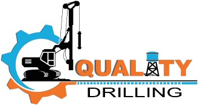

YOUR FOREMOST PARTNER IN
ENHANCING THE EFFICIENCY
OF YOUR MINING OPERATIONS,
OFFERING UNPARALLELED
QUALITY AND EXPERTISE


At QUALITY DRILLING, we specialize in precision blast hole drilling services designed to optimize the efficiency and effectiveness of your mining operations. With state-of-the-art equipment and a team of skilled professionals, we ensure accurate and reliable drilling results that meet the unique requirements of each project. Whether you're extracting minerals, aggregates, or other resources, our blast hole drilling services are tailored to maximize productivity while minimizing environmental impact.

Maintaining precise grade controls is essential for achieving optimal mining outcomes, and at QUALITY DRILLING, we excel in this critical aspect of the mining process. Our team utilizes cutting edge technology and industry-leading expertise to implement grade control solutions that enable you to accurately delineate ore bodies, manage waste rock, and optimize resource recovery. By leveraging our comprehensive grade control services, you can enhance operational efficiency, minimize costs, and maximize the value of your mining operations.
Mining operations demand meticulous planning, execution, and management to ensure optimal productivity and safety, and at QUALITY DRILLING, we offer comprehensive l'exploitation services to support your mining endeavors. From initial exploration and site preparation to extraction, processing, and rehabilitation, our team provides end-to-end solutions tailored to your specific requirements. With a focus on efficiency, safety, and sustainability, we help you navigate the complexities of mining operations with confidence, delivering results that exceed expectations while adhering to the highest standards of quality and environmental stewardship.

We are dedicated to enhancing the proficiency of operators within the industry. • Technical advice • Bit sharpening training • Diagnosis of skills and management of training in mine drilling and quarrying